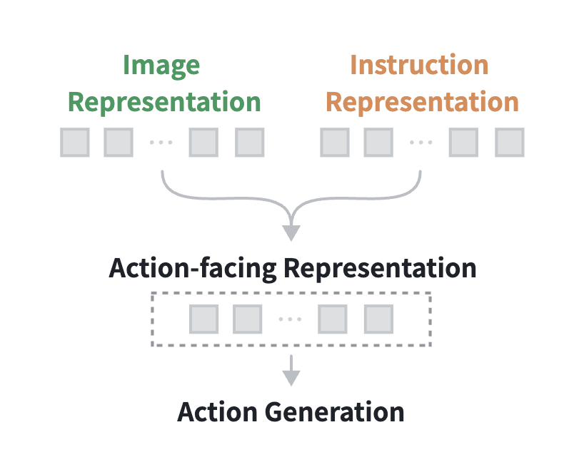
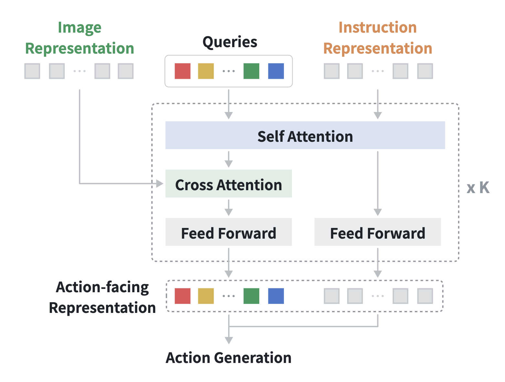
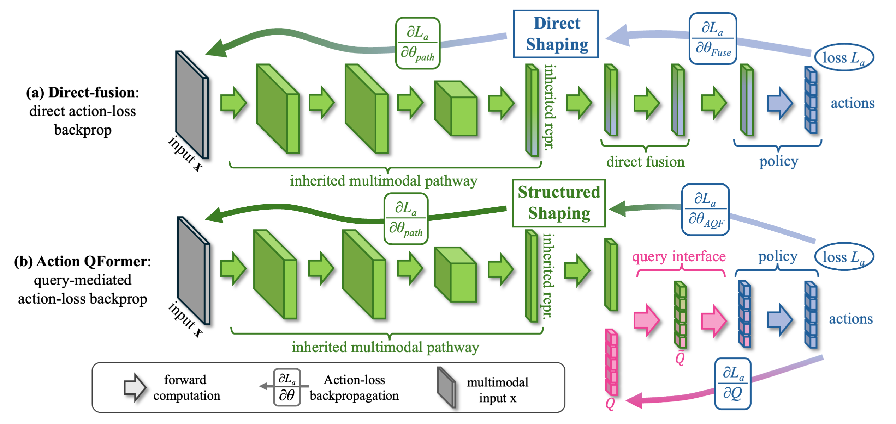
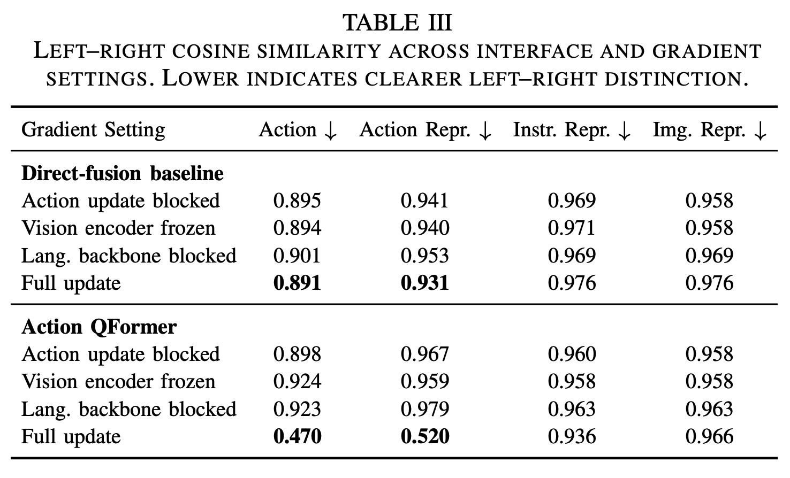
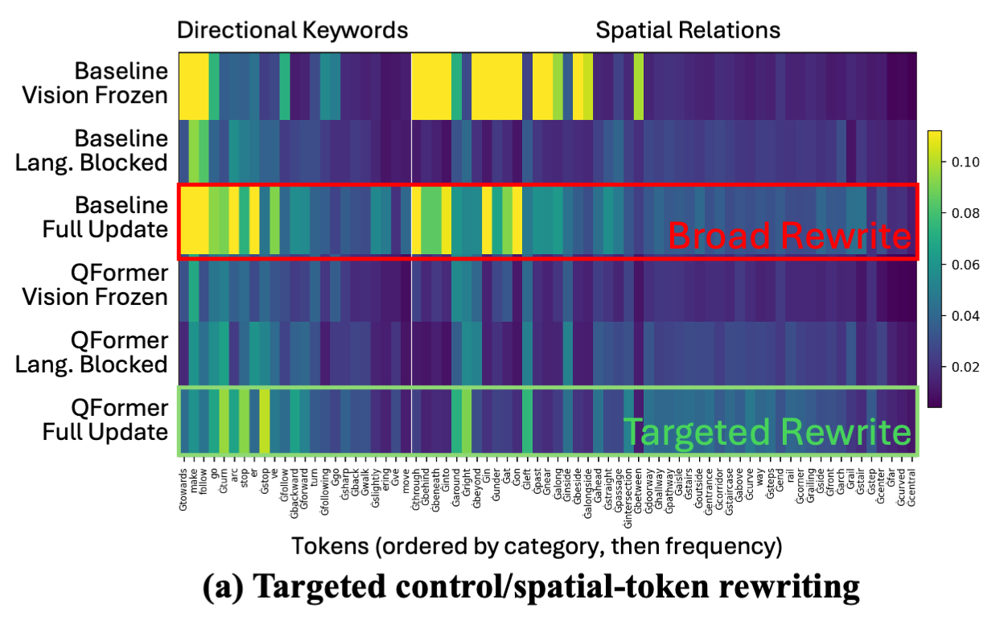
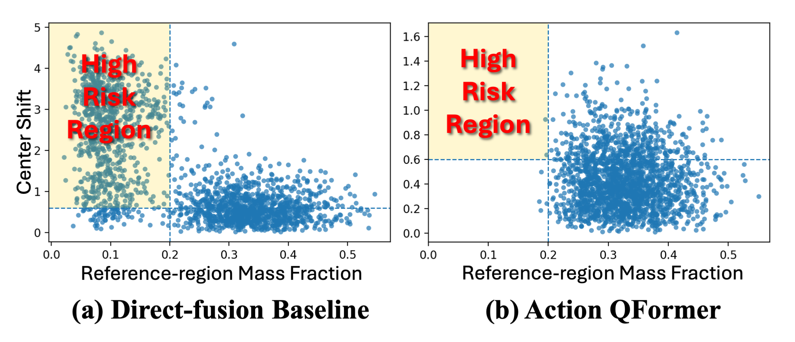
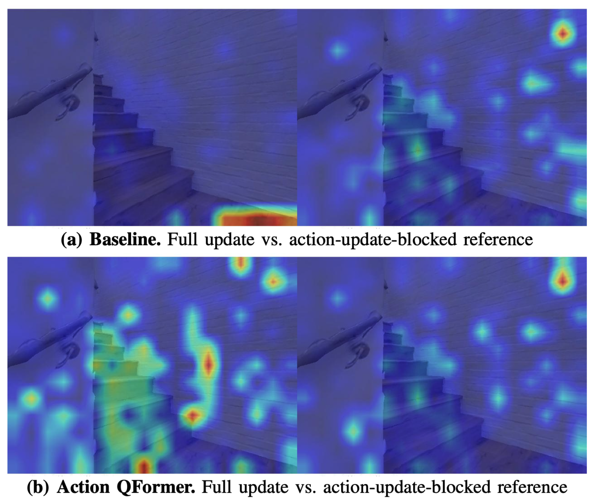

Abstract
Action supervision in vision-language-action (VLA) models is often treated as a downstream objective for learning action prediction. In this paper, we study it instead as a force that shapes inherited multimodal representations. We show that this shaping has a dual effect: it is necessary for forming action-compatible representations, but when action supervision is applied too directly to the inherited multimodal pathway, it can also destabilize representations that support language-side processing and object grounding.
To address this tension, we introduce Action QFormer, a query-based action-facing interface that uses instruction-conditioned queries to reorganize inherited multimodal information into action-facing representations before downstream action generation. In zero-shot sim-to-real navigation, Action QFormer improves average closed-loop task success from 18.8% to 56.3%, raises fixed-instruction action-generation correctness from 22.5% to 75.5%, and nearly eliminates out-of-distribution instruction generations.
Further analyses show that Action QFormer changes how action supervision shapes inherited multimodal representations, reducing broad upstream rewriting while preserving targeted and sometimes constructive action-supervised adaptation.
Action Interface Design
We compare a common direct-fusion VLA interface with Action QFormer, which introduces instruction-conditioned learnable queries before action prediction.

Direct-Fusion (baseline)
Many VLA systems reuse inherited image-side and instruction-side representations relatively directly for action generation, often as conditioning signals to a downstream policy.
We use direct fusion as a diagnostic abstraction of this broader interface pattern to study how action supervision reshapes inherited multimodal representations without a dedicated action-facing reorganization module.

Action QFormer (proposed)
Action QFormer replaces direct fusion with an instruction-conditioned query interface.
Learnable queries first absorb instruction context and then selectively extract visual evidence through cross-attention. The resulting query outputs are combined with the instruction-side representation to form an action-facing representation for downstream policy prediction.
Mechanism
Forward Organization and Backward Shaping
Forward organization determines how inherited image and instruction representations are assembled into an action-facing representation before policy prediction. Backward shaping describes how gradients from the action objective propagate through this organization and reshape the representations involved during training.
The figure contrasts two resulting regimes: direct fusion produces direct shaping of the inherited multimodal pathway, whereas Action QFormer introduces a query-mediated interface that enables more structured action-supervised shaping.

How the Interface Reshapes Learning
The two interfaces differ not only in their computation, but also in how they organize information and absorb action supervision.
Forward organization. In direct fusion, inherited image and instruction representations must simultaneously preserve pretrained multimodal semantics while adapting to action prediction. Action QFormer instead delegates this action-facing organization to a small set of instruction-conditioned queries. After absorbing the instruction, the queries selectively retrieve visual evidence through cross-attention and reorganize distributed multimodal information into a compact action-facing representation.
Backward shaping. The same structural difference also changes how action supervision propagates during training. Instead of requiring the inherited multimodal pathway to directly absorb action-specific adaptation, Action QFormer allows the learnable queries and their cross-attention interactions to absorb much of this reshaping first. The interface therefore becomes the primary site for action-facing adaptation, while upstream multimodal representations receive a more selective training signal.
Mechanistic Findings
Analyses reveal how Action QFormer reshapes action-facing structure, upstream rewriting, instruction-to-visual attention, and task-relevant visual grounding.
Clearer Action-Facing Directional Distinction
Action QFormer makes left- and right-turn commands easier to distinguish in the representation used for action prediction. This separation emerges primarily at the action-facing interface, while upstream image and instruction representations change much less.


Targeted Upstream Rewriting
Instead of broadly changing inherited language representations, Action QFormer concentrates adaptation on control-relevant tokens, including directional and motion expressions.
More Stable Instruction-to-Visual Attention
Action QFormer better preserves where instruction tokens look in the visual scene after action training. It produces fewer large attention shifts away from the corresponding action-update-blocked reference.


Constructive Visual Grounding
Action supervision does not only preserve grounding; in some cases, it sharpens attention toward task-relevant visual evidence, such as the staircase referred to by the instruction. “move towards the staircase.”
See the paper for detailed analysis and full quantitative results.
Real-World Validation
We validate Action QFormer through zero-shot sim-to-real closed-loop navigation across diverse real-world scenes.
18.8% → 56.3%
Average closed-loop task success
22.5% → 75.5%
Fixed-instruction action correctness
≈ 0%
Instruction OOD with Action QFormer
Cross-Scene Comparisons
Across four real-world scenes, Action QFormer shows more stable closed-loop behavior than the direct-fusion baseline.
Find the Fridge
Direct Fusion
Action QFormer
Find the Door
Direct Fusion
Action QFormer
Find the Chair
Direct Fusion
Action QFormer
Find the Table
Direct Fusion
Action QFormer
Detailed Evaluation
The full table separates instruction instability from downstream action-generation errors and final closed-loop outcomes.
Zero-Shot Sim-to-Real Closed-Loop Navigation
Full perception-to-instruction-to-action evaluation across four real-world scenes.
| Model | Scenario | Without Provided Instructions | Given Instructions | |||||
|---|---|---|---|---|---|---|---|---|
|
Instruction Direction ↑ |
Instruction OOD ↓ |
Action Direction ↑ |
Collisions ↓ | Success ↑ | Collisions ↓ | Success ↑ | ||
| Direct Fusion | Fridge | 80.3% | 100.0% | 65.6% | 0.50 | 25.0% | 0.25 | 75.0% |
| Door | 75.0% | 97.2% | 72.2% | 1.75 | 25.0% | 1.75 | 87.5% | |
| Chair | 46.4% | 100.0% | 53.6% | 0.62 | 25.0% | 0.75 | 25.0% | |
| Table | 22.9% | 100.0% | 16.7% | 0.75 | 0.0% | 0.62 | 25.0% | |
| Action QFormer | Fridge | 95.9% | 0.0% | 93.2% | 0.62 | 37.5% | 0.00 | 100.0% |
| Door | 97.6% | 0.0% | 90.5% | 1.50 | 62.5% | 0.38 | 87.5% | |
| Chair | 58.8% | 0.0% | 82.4% | 0.50 | 62.5% | 0.12 | 87.5% | |
| Table | 100.0% | 0.0% | 93.0% | 0.38 | 62.5% | 0.12 | 87.5% | |
The full table separates instruction instability from downstream action-generation errors and final closed-loop outcomes.
BibTeX
@article{ji2026actionqformer,
title={Action QFormer: Structured Representation Shaping under Action Supervision in Vision-Language-Action Models},
author={Ji, Yufeng and Tang, Wenhao and Niu, Haoyi and Sreenath, Koushil and Wu, Yi and Li, Zhongyu},
year={2026}
}